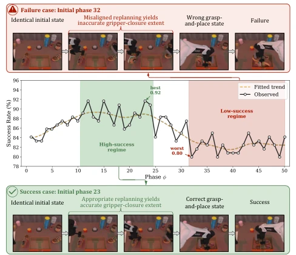
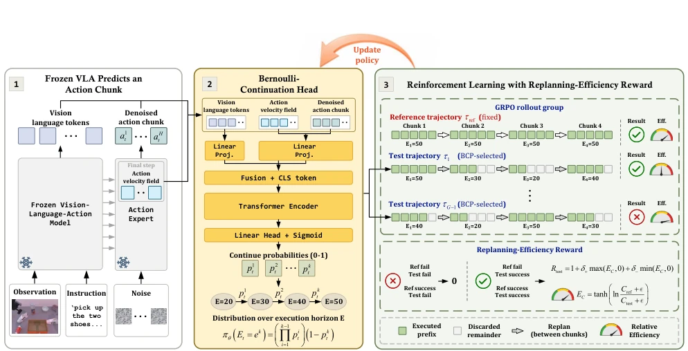
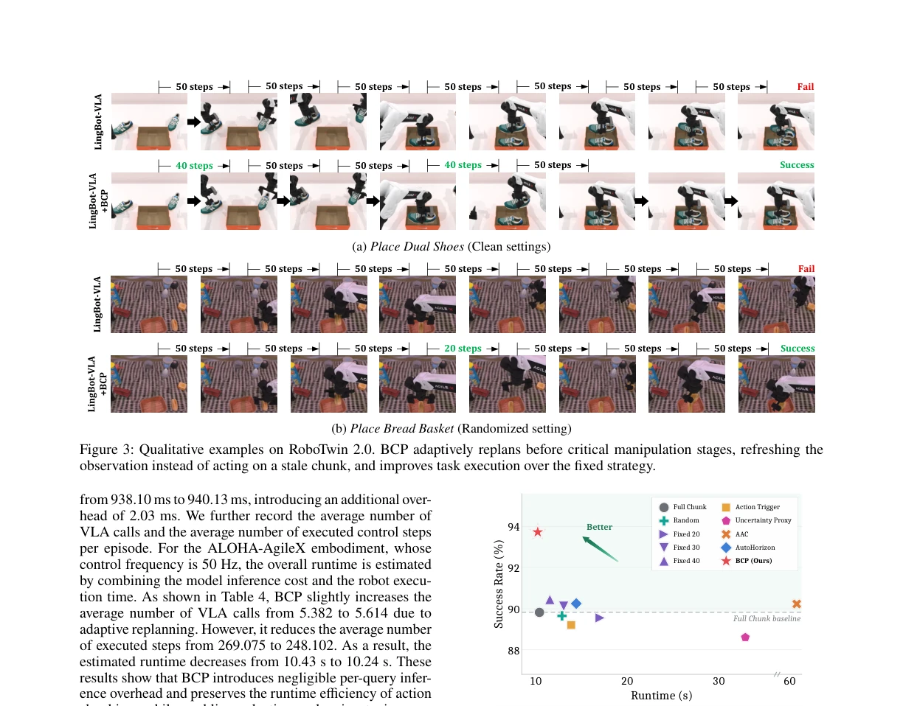

This paper delivers a lesson to VLA models that rigidly adhere to fixed-step execution strategies. The authors keenly observe that robot failures often stem not from inaccurate action prediction, but from "failing to re-plan when re-planning was needed." BCP transforms continuous decision-making into a Bernoulli process, retaining the efficiency of action chunks while making re-planning timing flexible. Although it merely adds a lightweight head, it achieves surprising improvements on low-success-rate tasks, even reducing total runtime. However, although RL training costs are low, relying on trajectory-level rewards may still be a headache for sparse-reward tasks. In short, it is a pragmatic solution that achieves great results with little effort, more grounded than those involving complex entropy estimation. It proves that in the VLA era, sometimes "when to think" is more important than "what to think."
研究动机Motivation
现有 chunk-based VLA 模型（如 Kim et al. 2024; Black et al. 2024）通常采用固定执行 horizon，导致重规划变成与任务进度无关的周期性调度。如图 [1] 所示，在 RoboTwin 2.0 上，仅改变初始相位就能造成 11.30% 的成功率差距。这意味着固定边界无法对齐关键操作阶段，导致机器人基于陈旧信息执行精细操作。现有自适应方法（如 Wang et al. 2026a; Liang et al. 2026）多依赖熵或注意力等启发式代理，或需采样多个 chunk，计算开销大且难以直接优化。本文旨在解决重规划时机错配问题，让执行 horizon 成为每 chunk 的决策，而非固定超参数。
Existing chunk-based VLA models (e.g., Kim et al. 2024; Black et al. 2024) typically adopt a fixed execution horizon, causing re-planning to become a periodic scheduling unrelated to task progress. As shown in Fig. [1], on RoboTwin 2.0, merely changing the initial phase can cause an 11.30% success rate gap. This means fixed boundaries cannot align with key operation stages, causing robots to execute fine-grained operations based on stale information. Existing adaptive methods (e.g., Wang et al. 2026a; Liang et al. 2026) mostly rely on heuristic proxies such as entropy or attention, or require sampling multiple chunks, resulting in high computational overhead and difficulty in direct optimization. This paper aims to solve the re-planning timing mismatch problem, making the execution horizon a decision per chunk rather than a fixed hyperparameter.

Figure 1: Phase-shift experiment with LingBot-VLA on RoboTwin 2.0 Placing Dual Shoes task, sweeping all 50 ini- tial phases ϕ under the same fixed 50-step horizon. Success rate varies strongly with ϕ (best 0.92, worst 0.80). At ϕ = 32 the robot executes an outdated gripper-closure extent and fails, while at ϕ = 23 a replanning boundary falls before the manipulation stage, yielding an accurate grasp and success.
The overall framework attaches a Bernoulli-Continuation Head on top of a frozen VLA. Inputs are visual language tokens and action features, which are encoded by a Transformer to output M-1 continue probabilities. Unlike Softmax classification, BCP models horizon selection as a Bernoulli decision on an ordered sequence, where a long horizon requires passing multiple continue judgments consecutively, implicitly incorporating prefix-shared inductive bias. Training employs GRPO reinforcement learning, utilizing trajectory-level results rather than per-chunk labels. The core innovation is the Replanning-Efficiency Reward, jointly rewarding task success and VLA call efficiency to prevent policy collapse to overly short horizons. Reference trajectories are used to anchor advantages, mitigating the sparse reward problem. This design requires no VLA weight updates, only training the lightweight head, achieving adaptive execution. Specifically, the Reward function compares the number of VLA calls between adaptive trajectories and fixed reference trajectories, penalizing successful but inefficient trajectories, and zeroing out failed trajectories directly, ensuring the strategy does not sacrifice success rate while pursuing efficiency. This mechanism allows BCP to trigger re-planning before key stages, rather than blindly executing complete chunks.

Figure 2: Overview of Bernoulli-Continuation Policy learning. Given a fixed-length action chunk predicted by a frozen VLA, BCP estimates continue probabilities to select an adaptive execution horizon, executes the corresponding action prefix, and is optimized with GRPO using the Replanning-Efficiency Reward.
Evaluated on RoboTwin 2.0, LIBERO, and real robot AGIBOT G1. Baselines include ACT, ABot-M0, and LingBot-VLA. The metric is success rate. BCP improves by 11.08% on 13 low-success-rate tasks and 4.06% on the full task set. Generalization to Randomized settings still yields gains. Improves by 6.8% on LIBERO-PRO. In real tasks, bottle grasping rises from 74% to 92%. Ablation shows BC Head outperforms Softmax, and RER further improves efficiency. During runtime, although VLA calls increase slightly, execution steps decrease, and total time is reduced. Compared to other adaptive strategies, BCP achieves the best balance between success rate and efficiency. Additionally, Fig. [3] shows the SR-RunTime tradeoff, where BCP achieves the highest success rate with the lowest runtime, proving its efficiency. Fig. [4] shows a comparison of success and failure cases on the real robot, intuitively demonstrating the effect of BCP triggering re-planning before key stages.

Figure 4: SR–runtime trade-off of execution-horizon strate- gies on 50 RoboTwin 2.0 tasks under the Clean setting. line because it still imposes a uniform replanning schedule that can remain misaligned with critical manipulation stages. Moreover, Uncertainty Proxy and AAC incur substantially higher runtime because they require sampling multiple ac- tion chunks to estimate uncertainty or entropy. Overall, nearly all competing strategies provide only marginal gains or even degradation, highlighting the difficulty of selecting suitable replanning boundaries. In contrast, BCP improves the aver- age success rate by 4.06%. Benefiting from the Replanning- Efficiency Reward, which penalizes inefficient horizon deci- sions, BCP replans only when necessary and consequently achieves the lowest runtim